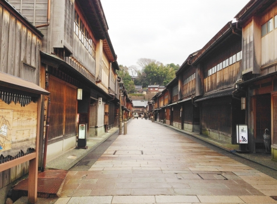

東茶屋街

最大規模の茶屋街
レトロな街並みを散策
外国人観光客も多い、国の重要伝統的建造物
金沢市には、東茶屋街（ひがしちゃやがい）、西茶屋街（にしちゃやがい）、主計町茶屋街（かずえまちちゃやがい）の三箇所に茶屋街があり「金沢三茶屋街」と呼ばれており、東茶屋街はそのうちでも最大規模を誇っています。外国人観光客だけでなく、着物をレンタルした女性観光客が伝統的な街並みをバックに撮影する姿も多く見られ、国内外問わず多くの観光客で賑わっています。
おすすめ
アクセス
城下まち金沢周遊バス・北陸鉄道路線バス・西日本JRバス「橋場町」バス停から徒歩約5分
金沢ふらっとバス材木ルート「浅野川大橋」バス停から徒歩約5分
>